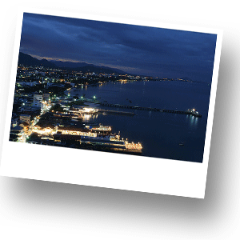
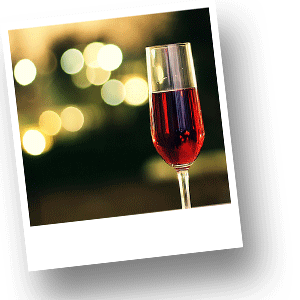
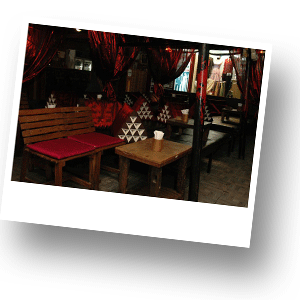
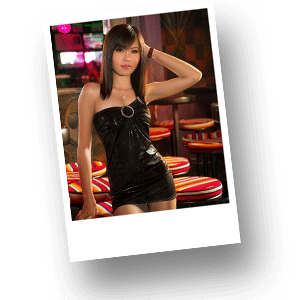

Ночная жизнь Хуа Хина

Королевский курорт Хуа Хин намного более тихий, чем другие популярные курорты Таиланда. Город официально считается среди других курортов Таиланда местом для семейного отдыха, для людей, кого интересует тихое и спокойное времяпроведение. Поэтому злачных мест, которыми изобилуют другие города Таиланда, в Хуа Хине искать не стоит. Другим фактором, который в значительной степени влияет на ночную жизнь города, является тот, что в течение нескольких последних лет Его Величество Король Таиланда находится в Хуа Хине значительную часть своего времени, поэтому важно не подпортить репутацию Хуа Хина, как «Королевского города». Однако, ночная жизнь в городе есть и, пусть она не столь красочна и разнообразна, как, например, в Паттайе, но, тем не менее, этого вполне достаточно, чтобы отдохнуть в спокойной атмосфере и приятно провести время после захода солнца. В Хуа Хине действительно много очень хороших ресторанов. Рестораны в городе достойны Вашего внимания. Высокое качество продуктов, отличная работа шев-поваров, прекрасное обслуживание – все это залог Вашего приятного вечера. Рестораны, как правило, открыты до 22.00-23.00. Также не стоит забывать про ночные рынки, которые также работают до 23.00, а с пятницы по воскресенье ночная жизнь дополняется открытием Cicada Market.

В более позней половине вечера для Вас в Хуа Хине есть множество баров. Один из лучших баров «Le Bar Francais», находится на улице Poolsuk Rd. – в правом переулке, около отеля City Beach. В «Le Bar Francais» представлен большой ассортимент высококачественного вина, а также прекрасный выбор алкогольных коктейлей, приготовленных по лучшим стандартам. Также Вашему вниманию предлагается меню, в котором Вы найдете удивительные легкие закуски, которые станут прекрасным дополнением к Вашему вечеру в баре.

Наиболее посещаемый и единственный бар в Хуа Хине, который работает до 04.00-05.00 утра «SamSam». Особенно многолюдно и шумно здесь с четверга до воскресенья. Рядом с баром «SamSam» расположена основная дискотека Хуа Хина в отеле Hilton, которая открыта до 02.00 ночи. Также рядом расположена самая посещаемая дискотека Хуа Хина, которая открыта до 05.00 утра – «Cat Bar». Если Вы любите петь, то здесь же сосредоточены караоке-бары, которые открыты до 04.00 утра. Любители живой музыки тоже могут найти себе бар по душе. Почти вся исполняемая там музыка относится к року, который любит местная молодежь.

Множество баров находится в нескольких кварталах от центра города на улице Soi Bintaban - переулок, расположенный около отеля Hilton. Это место никак не похоже на Паттайю или Бангкок, но большинство заведений, сосредоточенных в этом месте, держат симпатичных сотрудниц, отвечающих за размещение гостей, которые будут не прочь составить Вам компанию. Эти заведения становятся довольно шумными к середине ночи, но днем и ранним вечером сюда вполне можно прийти всей семьей с детьми. Некоторые бары предлагают неплохое меню. Есть бары, в основном посещаемые местными жителями, в которых подаются только напитки.
В заключение хочется отметить, что Хуа Хин – очень безопасный город, поэтому исследовать его ночную жизнь можно не опасаясь.